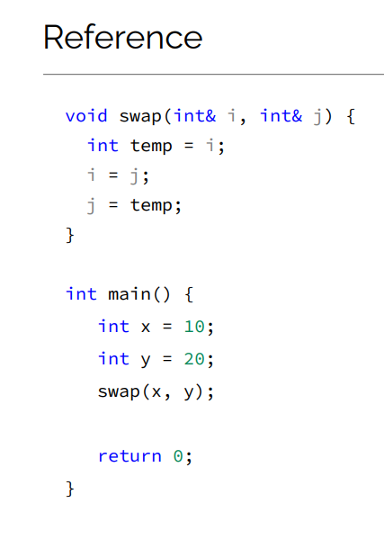
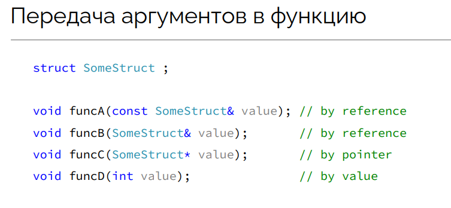
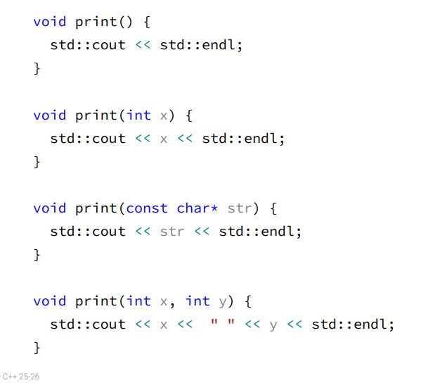
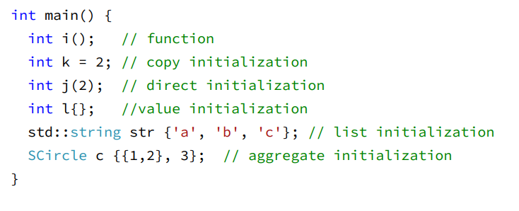
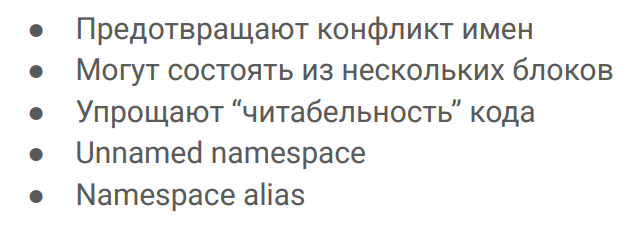

Ссылки, инициализация, перегрузка и пространства имён
Теория, примеры и иллюстрации по теме.
Reference, initialization, function overloading namespaces
Ссылки (reference)
Для передачи аргументов лучше чем указатель
это тип данных Псевданим для уже существующих объектов
int I = 10 int& j = i
При попытке создать пустую ссылку будет ошибка declared
const ссылка - запрещает менять объект и не использует доп память
Ссылка может указывать на локальный объект, пока объект жив. После выхода из его области видимости использование такой ссылки недопустимо.

Передача аргументов в функцию
- By reference в общем случае наиболее “дешевый” и простой способ
- By pointer *
- By value для встроенных и небольших типов

Перегрузка функций
Это когда передается много функций одного имени

Инициализация
Рекомендует использовать int {} value optimization

namespace
Предотвращают конфликт имён Можно использовать одинаковые функции, но только с namespace

#include <iostream>
namespace Foo{
void f();
}
namespace Boo{
void f();
}
int main() {
Foo::f();
Boo::f();
}using
using <пространство имен> std : : element>
если в файле предпологается постоянное использование например cout
#include <iostream>
int main(){
using std::cout;
cout << "using";
}